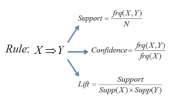
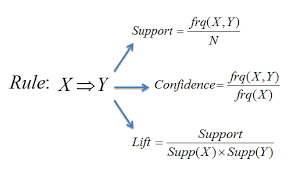
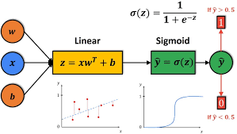

Datarlyst
I am a dedicated and results-driven data analyst with a B.Eng. in Materials and Metallurgical Engineering from the University of Ilorin. My journey into data analytics began during the pandemic and the academic strike period, which interrupted my university studies but opened the door to a new passion for data-driven insights and digital problem-solving.
Alongside my data analytics work, I also completed a graduate training program at Ashbard Limited, where I was embedded in the Wireline Services department. During this training, I gained firsthand experience in oilfield operations, pressure control equipment, and data acquisition tools used in well intervention. I developed a strong understanding of field operations, safety procedures, and the technical aspects of wireline logging, while also learning to interpret field data for operational decision-making.
This experience deepened my appreciation for the role of data in engineering operations, from maintenance planning to real-time diagnostics. It also reinforced my ability to work in multidisciplinary teams and under demanding field conditions.
Professionally, I’ve continued to build my skills as a remote data analyst, working on projects across business intelligence, health analytics, and operational data monitoring. I use tools like Python, SQL, Excel, and Power BI to turn raw data into actionable insights that support better decisions.
With my combined background in engineering, field experience, and data analytics, I’m particularly excited about applying artificial intelligence to challenges in materials science, manufacturing systems, and energy operations. My long-term goal is to bridge engineering and data science to drive innovation and operational excellence.
 

This analysis applied Association Rule Mining using the Apriori algorithm in R to explore factors influencing student academic performance and alcohol consumption. Using data from Portuguese secondary school students, preprocessing steps included converting numeric variables to factors and discretizing grades, age, and absences before generating rules. Results revealed that prior grades (G1 and G2) and internet access at home were strong predictors of good final grades, while study time did not appear as a significant factor. For alcohol consumption, lack of family support, poor family relationships, absence of extracurricular activities, and increased free time were strongly associated with higher weekday and weekend drinking. While the study highlighted key patterns, it also acknowledged limitations, including reliance on a single dataset and the fact that association rules indicate correlations rather than causations, suggesting that further research with enriched data and complementary methods could provide deeper insights.

This study applies logistic regression to predict the Gleason score, a critical grading system for assessing prostate cancer severity, which ranges from 6 (low-grade) to 10 (high-grade). Prostate cancer, one of the most common cancers in men, is influenced by risk factors such as age, race, genetics, and family history, and its severity is typically evaluated through PSA levels, digital rectal exams, biopsies, and imaging. The dataset used contained 380 patient records with clinical parameters including age, race, PSA levels, tumor volume, capsular involvement, and Gleason score. After preprocessing—handling missing values, discretizing skewed variables, and categorizing scores into low-grade (≤6) and high-grade (7–10)—a logistic regression model was developed. The analysis found that capsular involvement, age, and rectal exam results were significant predictors of Gleason score. The refined model achieved 78% accuracy on test data and an AUC of 0.83, indicating strong predictive performance. Despite limitations such as missing data, exclusion of skewed variables, and potential oversimplification of non-linear relationships, the model provides interpretable insights useful for medical decision-making. Future improvements could include advanced preprocessing, feature engineering, cross-validation, external validation, and testing more complex models (e.g., random forests or neural networks) to enhance generalizability and predictive power.
.jpg)
As the world grappled with an unprecedented global health crisis, the COVID-19 pandemic in late 2019
brought many challenges and complexities. This novel coronavirus, officially named SARS-CoV-2, swiftly
traversed borders, impacting communities, economies, and healthcare systems on an unparalleled scale.
In the face of this crisis, data analysis has become an invaluable tool for understanding the dynamics
of the pandemic, revealing insights into its spread, impacts, and potential mitigation strategies.
I delved into a short analysis of the COVID-19 dataset from ourworldindata.org, aiming to extract
meaningful patterns and trends contributing to our collective understanding of this historic event.
All research and visuals here were done through the R programming language.

IBM Cognos Analytics is a business intelligence and analytics platform developed by IBM. It is designed to help organizations extract insights from their data and make informed business decisions. I utilized the predictive analytics feature of IBM Cognos Analytics for predictive analytics on the platform. This feature allows users to build and deploy predictive models to make data-driven forecasts and predictions. The iris dataset, which contains features like sepal length, sepal width, and petal width, was used for this visualization. The target variable is the iris species (setosa, versicolor, or virginica)..

The dataset used for this Excel analysis was collected from a company that buys three primary fuels,
P.M.S, A.G.O, and D.P.K, from the depot, then transport them to various filling station upon demand,
which is then sold to the final consumers.
The company stores its data in hardcopy form;
I collected the hardcopy and entered it into Excel. The data entered contained six variables:
the “loading date,” which is the date loading of fuel into a truck from a particular depot takes
place before it is transported to its destination; the “depot” is the storage facility where the fuel
to be transported is gotten from; the “truck number” identifies the truck used to transport a particular
loaded fuel; the “fuel” represents the type of fuel to be transported; the “liter” is the amount of fuel
being transported in liters; and the “delivery location” is the place where the loaded fuel is to be delivered.
Data analysis was done and visualized using Excel, and the key visuals were used to create the dashboard.
This was the first project I ever completed as a data analyst.

The “Sales Records" dataset is also a public dataset downloaded from Kaggle. My goal is to understand the data, get some context, and understand the variables and the relationships between them by employing data visualization techniques to draw meaningful patterns and insights with the help of Tableau. A dashboard was also created. The filter feature was used on the dashboard for more interaction with the dashboard.